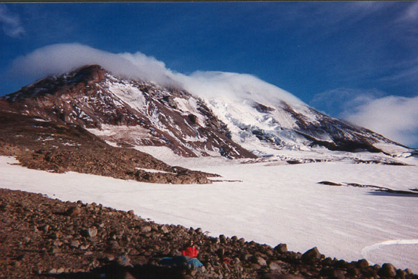
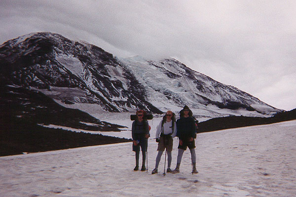
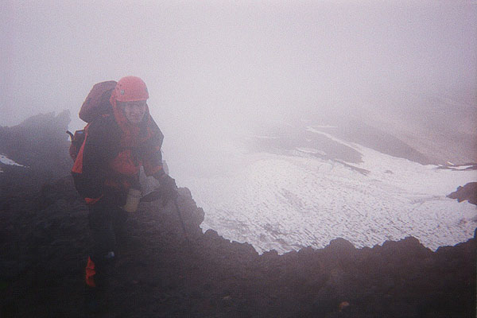

Mount Adams
September 4-5, 1999
Dudley and Joe, two friends from Texas were visiting, and wanted to get onto a high mountain out here. Their mountains are 30 feet high, and very, very technical. So we went the other way: a beautiful walk-up route on a grand volcano.
Joey came along too, for his first mountain climb. His equipment was a rag-tag assemblage of extra stuff we had. He rode the bus from the U district Friday evening, and after a Thai dinner, we headed out to camp at the trailhead, 4 long hours away.
We stopped at a bizarre supermarket that had seen better days. It kind of characterized the endless sprawl you fight through getting out of Tacoma. Finally, we attained the darkened roads, talking or sleeping until 2 am, then crawling into our sleeping bags under a clear, starry sky.
Steve drove up at 8:01 am, 1 minute late by my watch. Boy, was I surprised! I had been bragging that he was extremely punctual, no matter how many uncertain miles and roads he had to travel. To let me down like that…
The five of us sorted gear, and I had a minor panic attack when I thought I left Joey’s harness at home. But I didn’t. Then I had another, worse attack when I thought I left my boots at home.
I did.
A black despair weakened me, and I flopped onto the dirt. Finally, we worked out a plan where Dudley would give me his Gore Tex hikers when/if he changes into his plastic boots. Until, then I would wear sneakers. I checked to see if the hikers would take crampons, and they did. Okay, all is well!
We hiked the easy trail, attaining High Camp within a few hours. We continued on another 700 feet or so to an excellent camp at the toe of the broken Adams Glacier. There was a lake for water, and a sturdy-walled bivy site. We set up the tent, and headed up a snowfield for some snow practice. Everybody got a chance to try out crampons for the first time, and we made a small bollard (a teardropped-shaped cutout in the snow that holds a rope) that was very strong - none of us could break it.
Joey and I walked near the edge of crevasses on the Adams Glacier, then returned to camp and began preparing dinner. Steve was the main chef, running the two stoves like an engineer from a stout seat in the corner. Soon, we all had enjoyed a hot meal of cheese and cous-cous. The light started to fail, and a cloud-cap over the mountain waxed and waned. We set alarms to get up at 2:30 am.
We rose on time, and were crunching up the snow, then rock to the start of the route. Joey and I had tennis shoes on. We got on the ridge before daylight, so we huddled there for about 30 minutes to let the sky lighten in the east. We could see another party steaming up far, far below by the light of their headlamps.



With a bit of light, we felt ready to tackle the exposed scrambling required to continue. These moves were very easy, but dramatic with the Lava Glacier far below. We kept climbing, over rock, through tiny pebbles of scree, along steep trails and ridgetops. As we continued, the wind worsened, and the clouds came in from the west. Soon, everything below was blocked by an ocean of cloud. And higher up, fast moving clouds blocked the summit.
After some time, we entered this higher cloud, and the wind became tremendous! It tried to blow us over, and it was very fast and cold. Finally, we stopped and huddled in some rocks, planning to wait and see if conditions improved. Growing chillier, Joey and I headed up to a higher spur, hoping to catch a glimpse of more promising shelter. Joey turned back, but just above I found a spot in the sun, almost warm, and protected from the wind! I also saw that the steepness leveled off, and the rest of the climb would be a hands-in-pockets ascent.
Heartened by this news, my companions joined me, and we pressed on, making good time on the easier ground. We gained 1000 feet this way, but alas, the wind became stronger, and we couldn’t see a thing. We were above 11,000 feet, so close to the summit (an hour’s walk?) but forced to turn around.
The other party approached us, and decided to do whatever we did. They seemed happy with our decision to turn around. Joe and I zoomed out in front, skiing down the scree in long sliding steps. The ridge was easy to descend, but we still had 2 or 3 spots that puzzled us temporarily. We always found the way through, though, and our companions followed. Joe took a slip on icy rock and snow, but quickly self-arrested. The wind and cloud worsened, spraying us with moisture that froze on our jackets.
Off the ridge, we plodded down to camp. I tried to glissade the low angle snow, but couldn’t get my snow pants on. My feet were wet in the now-trashed and dirty sneakers, and I looked forward to getting to camp and dry socks.
Once there, despite my best efforts to nap, everyone wanted to clear out. The wind strengthened, and the first drops of rain got me moving. We worked fast and hard, soon trudging down the snowfields to regular trail.
I fell behind the group, not ready to leave the beautiful meadows we passed through. After a rest stop in a boulder strewn meadow, looking back at the excellent mountain, I was satisfied. Dudley and I zoomed down 3 miles without looking back or stopping. At the cars, we said goodbye to Steve, who drove a different way back to Portland. For the rest of us, burgers at a brew pub, and the long drive home. Even that was fun, with saltine-cracker-eating contests and other great ways to pass the time!
I want to thank Dudley, Joe, Joey and Steve for a great time!